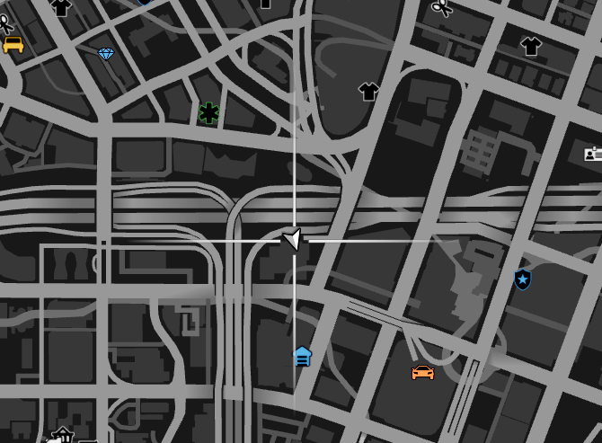
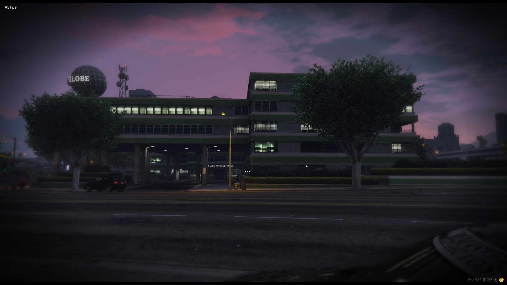
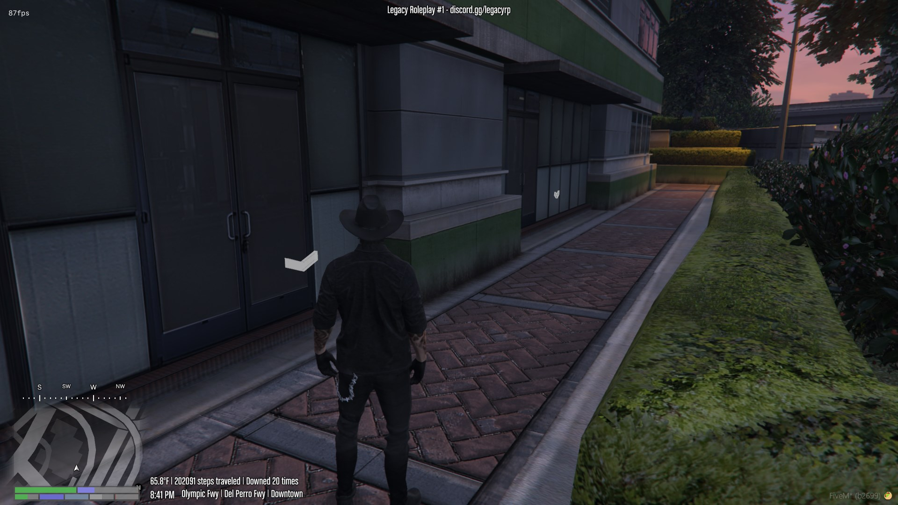

Treasure maps are a very good thing, both for having fun adventuring and also getting valuable loot.
1. Make sure you have all the pieces to a treasure map
Treasure map pieces needed are as followed:
Sketchy Map - 3 pieces total
Worn Map - 6 pieces total
Fancy Map - 12 pieces total
Exquisite Map - 24 pieces total
2. Head over to the Daily Globe building to combine map pieces together
**There will be 4 doors at the Daily Globe building. The building is located off of Las Lagunas and San Andreas Ave.
Picture of the location on a map:


Picture of the door:

What to do now?:
Have a look at your map, you should be able to see a tiny gray colored circle somewhere (most likely in the hills). That will be the digsite.
What can you get?
As you are digging for treasure with your shovel, you can find all kinds of things, depending on what rarity map you have.
Once you got your ancient treasure, enjoy! You can return to the main website with the button located at the top left. Or click here!